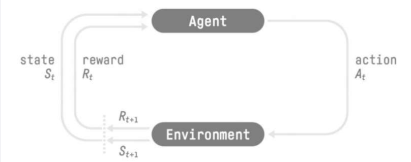
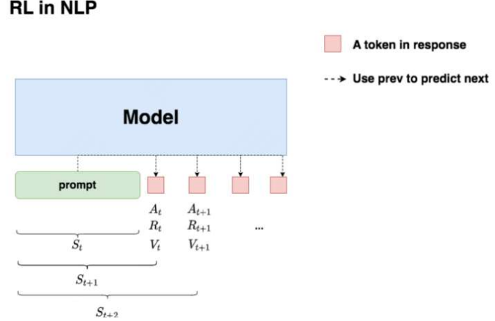
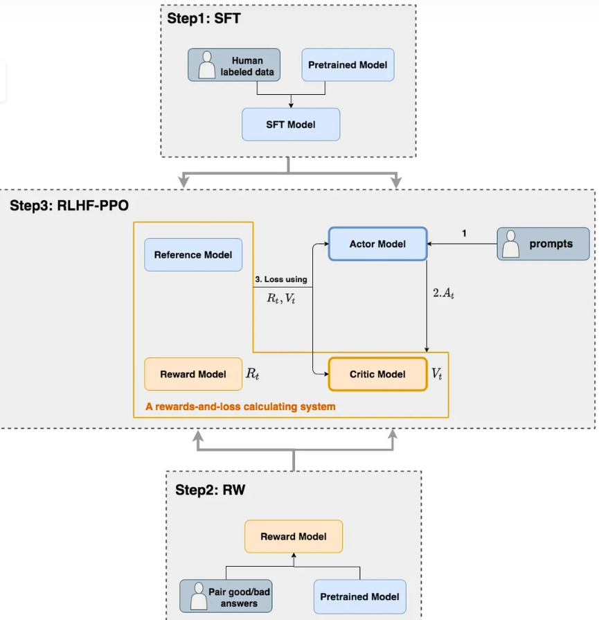
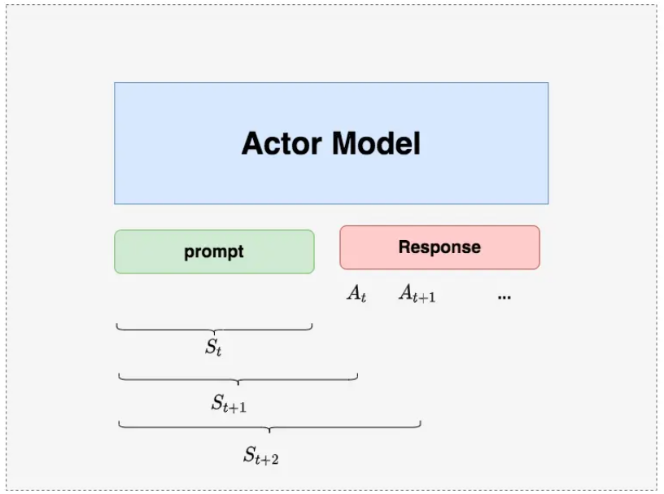
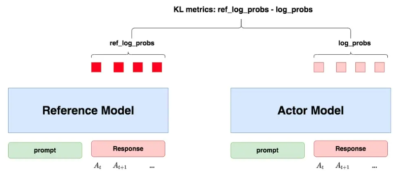
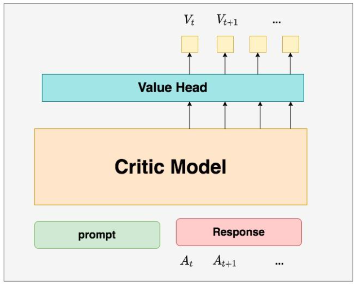
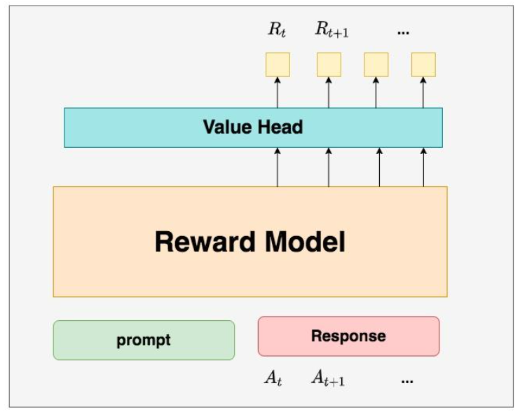
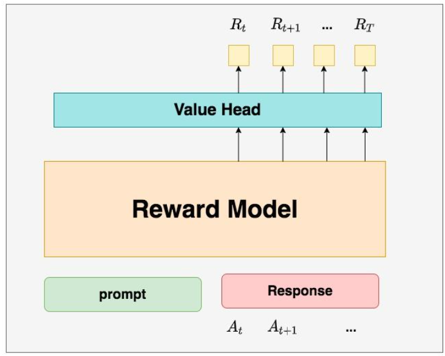
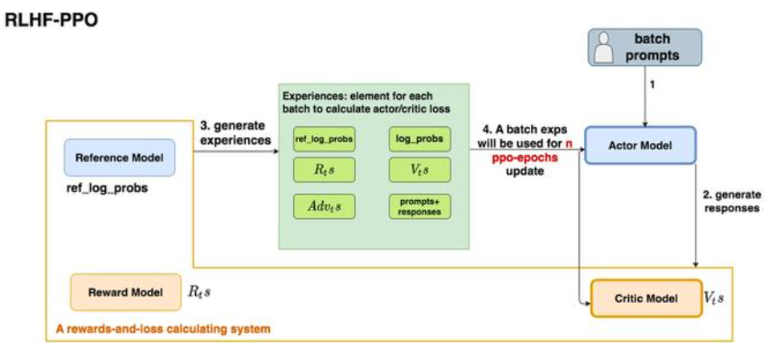

参考:图解大模型RLHF系列之：人人都能看懂的PPO原理与源码解读 - 知乎
大模型系列(二)- RLHF:基于人类反馈的强化学习
Reinforcement Learning from Human Feedback
RLHF有人说提升很大，也有人说效果不明显，究其根本还是系统链路太长自由度太高，不像SFT一样可以通过数据配比、prompt、有限的超参数来可控地调整效果。
也正是因为它的自由度、以目标为导向的学习范式和性价比更高的标注成本，业内往往认为它的上限更高。认为scalable的RLHF（不局限于PPO）就是下一步的大突破所在。
大语言模型的RLHF，实际上是模型先试错再学习的过程。 我们扮演着老师的角色，给出有趣的问题，而模型则会像小学生一样，不断尝试给出答案。模型会对着黑板写下它的答案，有时候是正确的，有时候会有错误。我们会仔细检查每一个答案，如果它表现得好，就会给予它高声赞扬；如果它表现不佳，我们则会给予它耐心的指导和反馈，帮助它不断改进，直到达到令人满意的水平。
1. RLHF介绍
1.1 强化学习整体流程

强化学习的两个实体：智能体（Agent）与环境（Environment）
强化学习中两个实体的交互：
- 状态空间S：S即为State，指环境中所有可能状态的集合
- 动作空间A：A即为Action，指智能体所有可能动作的集合
- 奖励R：R即为Reward，指智能体在环境的某一状态下所获得的奖励。
以上图为例，智能体与环境的交互过程如下：
- 在时刻t，环境的状态为St，达到这一状态所获得的奖励为Rt
- 智能体观测到St与Rt，采取相应动作At
- 智能体采取At后，环境状态变为St+1，得到相应的奖励Rt+1
智能体在这个过程中学习，它的最终目标是：找到一个策略，这个策略根据当前观测到的环境状态和奖励反馈，来选择最佳的动作。
1.2 价值函数
上文中，提到了奖励值Rt，它表示环境进入状态St下的即时奖励。
但如果只考虑即时奖励，目光似乎太短浅了：当下的状态和动作会影响到未来的状态和动作，进而影响到未来的整体收益。
所以，一种更好的设计方式是：**t时刻状态s的总收益 = 身处状态s能带来的即时收益 + 从状态s出发后能带来的未来收益。**写成表达式就是：
Vt=Rt+γVt+1
其中：
- Vt： t 时刻的总收益，蕴涵了“即时”和“未来”的概念
- Rt ： t 时刻的即时收益
- Vt+1 ： t+1 时刻的总收益，蕴涵了“即时”和“未来”的概念。而Vt+1对 Vt来说就是“未来”。
- γ ：折扣因子。它决定了我们在多大程度上考虑将“未来收益”纳入“当下收益”。
2. NLP中的强化学习
对NLP任务做强化学习（RLHF）的目的：我们希望给模型一个prompt，让模型能生成符合人类喜好的response。再回想一下gpt模型做推理的过程：每个时刻t 只产生一个token，通过上文与已有token的结合再生成下一个token。

上图流程如下：
- 先喂给模型一个prompt，期望它能产出符合人类喜好的response
- 在 t 时刻，模型根据上文，生成一个token，即对应着强化学习中的动作，记为At 。因此不难理解，在NLP语境下，强化学习任务的动作空间就对应着词表。
- 在 t 时刻，模型产出token At对应着的即时收益为Rt，总收益为Vt。这个收益即可以理解为“对人类模型喜好的衡量”。此刻，模型的状态从St变为St+1，也就是从“上文”变成“上文 + 新产出的token”
其中：
- 若按1.1中图所示，生成token At所获得的奖励应该是Rt+1，这里只是为了方便理解如此书写
- Rt与Vt是分别由另外的Reward Model与Critic Model生成的，之后会讲到
- 模型本身的参数更新要等有足够的观测数据（例如等模型把完整的response生成完），再去更新它的参数。
3. RLHF中的四个模型

SFT阶段：首先通过SFT(监督微调)得到Reference Model和初始的Actor Model，Reference Model的参数是冻结的，后续要对Actor Model继续进行参数更新。
RW阶段:通过对预训练模型输入正负样本的问答案例得到Reward Model，其参数也是冻结的
在RLHF-PPO阶段，一共有四个主要模型，分别是：
- Actor Model：我们想要训练的目标模型
- Critic Model：评判模型，它的作用是预估总收益Vt
- Reward Model：奖励模型，它的作用是计算即时收益Rt
- Reference Model：参考模型，它的作用是在RLHF阶段给语言模型增加一些“约束”，防止语言模型训歪（朝不受控制的方向更新，效果可能越来越差）。
其中:
- Actor/Critic Model在RLHF阶段是需要训练的（图中给这两个模型加了粗边，就是表示这个含义）；而Reward/Reference Model是参数冻结的。
- Critic/Reward/Reference Model共同组成了一个“loss”计算体系，我们综合它们的结果计算loss，用于更新Actor和Critic Model，一般是在一个response之后更新，而不是生成一个token更新一次。
3.1 Actor Model
Actor就是我们想要训练的目标模型。一般用SFT阶段产出的SFT模型来对它做初始化。
SFT:监督微调，从上图可以看出就是通过人工标注的数据集对预训练过的模型进微调

先喂给Actor Model一条prompt ，让它生成对应的response。然后将“prompt + response"送入“loss”计算体系中去算得最后的loss，用于更新actor。
3.2 Reference Model
Reference Model（以下简称Ref模型）一般也用SFT阶段得到的SFT模型做初始化，在训练过程中，它的参数是冻结的。

我们希望训练出来的Actor模型既能达到符合人类喜好的目的，又尽量让它和SFT模型不要差异太大。即我们希望两个模型的输出分布尽量相似。而KL散度能用来衡量输出分布的相似度。
- 对于目标模型：给它一个prompt，它正常输出对应的response。那么response中每一个token肯定有它对应的log_prob结果，这样的结果可以记为log_probs
- 对于参考模型：把Actor生成的"prompt + response"喂给它，那么它同样能给出每个token的log_prob结果，记其为ref_log_probs
那么这两个模型的输出分布相似度就可以用**ref_log_probs - log_probs**来衡量，我们可以从两个方面来理解这个公式：
- 从直觉上理解：ref_log_probs越高，说明Ref模型对Actor模型输出的肯定性越大。即Ref模型也认为，对于某个St ，输出某个At的概率也很高P(At∣St)。这时可以认为Actor模型较Ref模型没有训歪
- 从KL散度上理解：KL散度的近似，这个值越小意味着两个分布的相似性越高。
$KL[Actor(X) || Ref(X)] = E_{x\sim Actor(x)}[log\frac{Actor(x)}{Ref(x)}] = log\_probs - ref\_log\_probs$
机器学习_KL散度详解（全网最详细）
KL散度（Kullback-Leibler divergence），可以称作相对熵（relative entropy）或信息散度（information divergence）。KL散度的理论意义在于度量两个概率分布之间的差异程度，当KL散度越大的时候，说明两者的差异程度越大；而当KL散度小的时候，则说明两者的差异程度小。如果两者相同的话，则该KL散度应该为0。
KL散度(Kullback–Leibler divergence)非负性证明_kl散度非负性证明-CSDN博客
KL散度具备非负性,不具备对称性，也就是说P对于Q的KL散度并不等于Q对于P 的KL散度。因此，KL散度并不是一个度量（metric），即KL散度并非距离。
我们设定两个概率分布分别为P和Q，在设定为连续随机变量的前提下，他们对应的概率密度函数分别为p(x)和q(x)。
离散的情况下用q(x)去近似p(x)的KL散度的公式:
KL(P∣∣Q)=∑p(x)logq(x)p(x)=−∑p(x)log(q(x))+∑p(x)log(p(x))=H(P,Q)−H(P)
最后得到的第一项称作P和Q的交叉熵（cross entropy），后面一项就是熵。
在信息论中，熵代表着信息量，H(P)代表着基于P PP分布自身的编码长度，也就是最优的编码长度（最小字节数）。而H(P, Q)则代表着用Q的分布去近似P分布的信息，自然需要更多的编码长度。并且两个分布差异越大，需要的编码长度越大。所以两个值相减是大于等于0的一个值，代表冗余的编码长度，也就是两个分布差异的程度。所以KL散度在信息论中还可以称为相对熵（relative entropy）。
3.3 Critic Model
Critic Model和Actor Model一样，也做参数更新。实践中，Critic Model的设计和初始化方式也有很多种，例如和Actor共享部分参数、从RW阶段的Reward Model初始化而来等等。
deepspeed-chat采用了Reward Model作为它的初始化，所以这里也按Reward模型的架构来简单画画它。可以简单理解成，Reward/Critic模型和Actor模型的架构是很相似的（毕竟输入都一样），区别在于最后一层增加了一个Value Head层，该层是个简单的线形层，用于将原始输出结果映射成单一的Vt值。
在图中， Vt表示Critic模型对 t 时刻及未来（response完成）的收益预估。

Critic Model 架构
1.为什么要单独训练一个Critic模型用于预测收益：
- 前文中讨论Vt（即时 + 未来收益）时是站在上帝视角的，即在t时刻，我们就已经知道了客观存在的Vt，但是对于模型而言，在t时刻它是不知道确切的Vt的，它只能预测未来收益。
所以总结来说，在RLHF中，我们不仅要训练模型生成符合人类喜好的内容的能力（Actor），也要提升模型对人类喜好量化判断的能力（Critic），这就是Critic模型存在的意义。
3.4 Reward Model
Reward Model用于计算生成token At 的即时收益，它就是RW阶段所训练的奖励模型，在RLHF过程中，它的参数是冻结的
Reward模型和critic模型非常相似,架构图如下:

Reward Model 架构
1.为什么Critic模型要参与训练，而同样是和收益相关的Reward模型的参数就可以冻结：
- Reward模型是经过和“估算收益”相关的训练的，在收到激励后它能产生客观的即时奖励，因此在RLHF阶段它可以直接被当作一个能产生客观值的模型
- Reward模型代表的含义就是“即时收益”，你的token At 已经产生，因此即时收益自然可以立刻算出。
2.已经用Critic预测出包含“即时”和“未来”概念的Vt了，那还需要代表“即时”概念的 Rt 做什么呢？
- 因为Critic得到的Vt是预测出的，而利用价值函数Vt=Rt+γVt+1，结合客观存在的Rt得到的Vt更加准确。上帝视角的客观收益Vt是不知道的，只能用Vt=Rt+γVt+1去做近似。
4. RLHF中的Loss计算
四个模型中只有Actor Model和Critic Model会进行参数更新，因此也只有它们对应的两个loss。
- **Actor loss：**用于评估Actor是否产生了符合人类喜好的结果，将作用于Actor的BWD上。
- **Critic loss：**用于评估Critic是否正确预测了人类的喜好，将作用于Critic的BWD上。
4.1 Actor loss
4.1.1 首先直观设计
- Actor根据上文St产出tokenAt，概率分布为：P(At∣St)
- Critic根据St,At，产出对总收益的预测Vt，注意这里的Vt是Critic Model预测出来的，不是由价值函数得到的
- 定义目标模型的损失，表示对于response中每一个时刻t的loss的总和
actor_loss=−∑t∈response_timestepVtlogP(At∣St)
Vt>0，意味着Critic对Actor当前采取的动作给了正向反馈，这时要提高P(At∣St)才能减小loss。
Vt<0，意味着Critic对Actor当前采取的动作给了负向反馈，这时要减小P(At∣St)才能减小loss。
这个loss设计的含义是，对上文 St 而言，如果token At 产生的收益较高，那就增大它出现的概率，否则降低它出现的概率。
4.1.2 引入优势概念
如果在实行决策时候获得的实际收益大于原本的预测收益，多出的收益部分就叫优势。
在NLP任务中，实际收益Vt=Rt+γ∗Vt+1对比Critic Model预测得到的Vt的差异，可以将优势定义为：
Advt=Rt+γ∗Vt+1−Vt
此时actor_loss可以替换为:
actor_loss=−∑t∈response_timestepAdvtlogP(At∣St)
4.1.3 重新设计Rt

按照上文的理解，Rt应该表示每个Actor产出token At带来的即时收益，上图中其中T表示最后一个时刻。
在deepspeed-chat的RLHF实践中，对Rt做了另一种设计：
⎩⎪⎪⎪⎪⎨⎪⎪⎪⎪⎧RtRt=−kl_ctl∗(logPref(At∣St)P(At∣St)),t=T=−kl_ctl∗(logPref(At∣St)P(At∣St))+Rt,t=T
其中：
- kl_ctl：常量，可以理解成是一个控制比例的缩放因子，在deepspeed-chat中默认设为0.1
- −logPref(At∣St)P(At∣St)：KL散度，写成更容易理解的形式，就是
ref_log_probs - log_probs，为了防止模型训歪，我们需要把这个KL散度加入loss计算中
上面的Rt设计可以理解为：
- t=T时，更加关心Actor是否有在Ref的约束下生产token At，即更关心训练后的目标模型时候偏离参考模型过远。
- t=T时，我们不仅关心Actor是否遵从了Ref的约束，也关心真正的即时收益Rt
为什么只有最后一个时刻的Rt被纳入了考量：
因为在训练Reward模型的阶段，就是用最后一个时刻的Rt来表示对完整的prompt + response的奖励预测，用最后一个时刻的Rt来对模型进行评估的，但是Reward训练阶段算loss时，还是考虑了response部分所有token输出的reward值。所以到了RLHF的场景下，其余时刻的即时奖励，我们就用“Actor是否遵循了Ref的约束”来进行评价。
需要注意的是， Rt的设计并不只有这一种。deepspeed在自己的代码注释中也有提过，可以尝试把最后一个时刻的Rt替换成所有token的即时奖励的平均值。
代码:
1
2
3
4
5
6
7
8
9
10
11
12
13
14
15
16
17
18
19
20
21
22
23
24
25
26
27
28
29
30
31
32
33
34
35
36
37
38
39
40
41
42
43
44
45
46
47
48
49
50
| def compute_rewards(self, prompts, log_probs, ref_log_probs, reward_score,
action_mask):
"""
reward_function：计算最终的reward分数
复习一下几个相关参数的默认值：
self.kl_ctl = 0.1
self.clip_reward_value = 5
对于batch中的某个prompt来说，它最终的reward分数为：
(1) 先计算actor和ref_model的logit相似度： log_probs - ref_log_probs
其实写成ref_log_probs - log_probs更好理解些
这个值越大，说明ref_model对actor生成的结果的认可度越高（即表明rlhf没有训歪），
没有训歪的情况下我们也应该给模型一些奖励，这个奖励就是self.kl_ctl * (ref_log_probs - log_probs)
（2）由于我们只取最后一个token对应位置的分数作为reward_score，因此我们只需要：
self.kl_ctl * (ref_log_probs - log_probs)的最后一位 + reward_score
(3) 同时我们对reward_score也做了大小限制，最大不超过self.clip_reward_value（超过统一给成self.clip_reward_value），
最小不低于-self.clip_reward_value（低于统一给成-self.clip_reward_value）
(4) 最后返回的rewards大小为：（batch_size, 各条数据的长度），对batch中的每条数据来说：
- response的最后一位：self.kl_ctl * (ref_log_probs - log_probs)的最后一位 + reward_score
- response的其余位置：self.kl_ctl * (ref_log_probs - log_probs)
"""
kl_divergence_estimate = -self.kl_ctl * (log_probs - ref_log_probs)
rewards = kl_divergence_estimate
start = prompts.shape[1] - 1
ends = start + action_mask[:, start:].sum(1) + 1
reward_clip = torch.clamp(reward_score, -self.clip_reward_value,
self.clip_reward_value)
batch_size = log_probs.shape[0]
for j in range(batch_size):
rewards[j, start:ends[j]][-1] += reward_clip[j]
return rewards
|
4.1.4 重新设计优势
目前为止：
actor_loss=−∑t∈response_timestepAdvtlogP(At∣St)
Advt=Rt+γ∗Vt+1−Vt
⎩⎪⎪⎪⎪⎨⎪⎪⎪⎪⎧RtRt=−kl_ctl∗(logPref(At∣St)P(At∣St)),t=T=−kl_ctl∗(logPref(At∣St)P(At∣St))+Rt,t=T
对于收益而言，分为即时和未来，那么对于优势而言，是不是也能引入对未来优势的考量呢？
于是可以把Advt改写为：
Advt=(Rt+γ∗Vt+1−Vt)+γ∗λ∗Advt+1
也就是强化学习中的GAE，其中，新引入的λ也是一个常量，可将其理解为权衡因子，它控制了在计算当前优势时对未来优势的考量。（从强化学习的角度上，它控制了优势估计的方差和偏差）
如何计算Advt+1:
对于最后一个时刻 T，它的未来收益VT+1和未来优势AdvT+1都为0，故AdvT=RT−VT，有了$Adv_{T}，就能从后往前，通过动态规划的方法，把所有时刻的优势都算出来
代码(其中返回值中的returns表示实际收益，将被用于计算Critic模型的loss，可以参见4.2)：
1
2
3
4
5
6
7
8
9
10
11
12
13
14
15
16
17
18
19
20
21
22
23
24
25
26
27
28
29
30
31
32
33
34
35
36
37
38
39
40
41
42
| def get_advantages_and_returns(self, values, rewards, start):
"""
Adopted from https://github.com/CarperAI/trlx/blob/main/trlx/models/modeling_ppo.py#L134
没有引入GAE前的t时刻的优势值：
detal_t = r_t + gamma * V_t+1 - V_t
其中：
- r_t表示t时刻的即时收益
- V_t+1表示未来时刻的预期收益
- r_t + gamma * V_t+1可理解成t时刻的实际预期收益
- V_t可理解成t时刻的预估预期收益（是模型，例如critic model自己估算出来的）
引入GAE后的t时刻的优势值：
A_t = delta_t + gamma * lambda * A_t+1
粗暴理解为在t时刻时，不仅考虑当下优势，还考虑了未来的优势
为了知道A_t, 我们得知道A_t+1，所以在本算法中采取了从后往前做动态规划求解的方法，也即：
假设T是最后一个时刻，则有A_T+1 = 0, 所以有: A_T = delta_T
知道了A_T, 就可以依次往前倒推，把A_t-1, A_t-2之类都算出来了
引入GAE后t时刻的实际预期收益
returns_t = A_t + V_t
= delta_t + gamma * lambda * A_t+1 + V_t
= r_t + gamma * V_t+1 - V_t + gamma * lambda * A_t+1 + V_t
= r_t + gamma * (V_t+1 + lambda * A_t+1)
注意，这里不管是advantages还是returns，都只算response的部分
"""
lastgaelam = 0
advantages_reversed = []
length = rewards.size()[-1]
for t in reversed(range(start, length)):
nextvalues = values[:, t + 1] if t < length - 1 else 0.0
delta = rewards[:, t] + self.gamma * nextvalues - values[:, t]
lastgaelam = delta + self.gamma * self.lam * lastgaelam
advantages_reversed.append(lastgaelam)
advantages = torch.stack(advantages_reversed[::-1], dim=1)
returns = advantages + values[:, start:]
return advantages.detach(), returns
|
4.1.5 PPO-epoch: 引入新约束

RLHF-PPO的训练过程
- 准备一个batch的prompts
- 将这个batch的prompts输入给Actor模型，生成对应的responses。
- 把prompt+responses喂给我们的Critic/Reward/Reference Model，生成用于计算actor/critic loss的数据，按照强化学习的术语，我们称这些数据为经验（experiences）
- 根据这些经验，实际计算出actor/critic loss，然后更新Actor和Critic模型
图中第四步显示说一个batch的经验值将被用于n次模型更新：
意思是1个batch的经验，被用来计算ppo-epochs次loss，更新ppo-epochs次Actor和Critic模型。这是因为在强化学习中，收集一个batch的经验非常耗时。在我们RLHF的例子中，收集一次经验，它要等四个模型做完推理，正是因此，一个batch的经验，只用于计算1次loss，更新1次Actor和Critic模型，好像有点太浪费了。
伪代码：
1
2
3
4
5
6
7
8
9
10
11
12
13
14
15
16
17
18
19
20
21
22
23
|
actor, critic, reward, ref = initialize_models()
for i in steps:
exps = generate_experience(prompts, actor, critic, reward, ref)
for j in ppo_epochs:
actor_loss = cal_actor_loss(exps, actor)
critic_loss = cal_critic_loss(exps, critic)
actor.backward(actor_loss)
actor.step()
critc.backward(critic_loss)
critic.step()
|
若要让一个batch的经验值被重复使用ppo_epochs次，等价于我们想要Actor在这个过程中，模拟和环境交互ppo_epochs次。
模拟的方法是，将第一次输入batch之后得到的经验称之为Actorold，而每次做完ppo_epochs而更新的actor叫Actornew，为了让每次做ppo_epochs是相对于最初的模型做更新，需要让每次做完ppo_epochs得到的Actornew模仿最开始的Actorold，可以通过KL散度来衡量Actornew与Actorold的相似度，因此actor_loss可以被改进为：
actor_loss=−∑t∈response_timestepAdvtlogPold(At∣St)P(At∣St)
参考详解近端策略优化(ppo，干货满满) - 行者AI - 博客园，将log去掉
actor_loss=−∑t∈response_timestepAdvt∗Pold(At∣St)P(At∣St)
其中Pold表示batch真正输入的那个Actor；P表示ppo_epochs中实时迭代更新的Actor，它在模仿Pold的行为。从直觉上也可以理解成：在Actor想通过模拟交互的方式，使用一个batch的经验值更新自己ppo_epochs次时，它需要受到batch真正输入的那个Actor的约束，这样才能在有效利用经验的同时，提升训练速度的基础上，保持训练的稳定。
如果Actorold的约束能力不够，Pold(At∣St)P(At∣St)还是超出了可接受的范围，那怎么办？答案是裁剪(clip)
可以给Pold(At∣St)P(At∣St) 设置一个范围，例如(0.8 ,1.2)来保证Actor 和Actorold的分布相似性在可接受范围内。这时actor_loss变为
actor_loss=−∑t∈response_timestepmin(Advt∗Pold(At∣St)P(At∣St),Advt∗clip(Pold(At∣St)P(At∣St),0.8,1.2))
如果超过变化范围，将Pold(At∣St)P(At∣St)强制设定为一个常数后，就说明这一部分的loss和Actor模型无关了，而Advt这项本身也与Actor无关。所以相当于，在超过约束范围时，我们停止对Actor模型进行更新。
整体代码：
1
2
3
4
5
6
7
8
9
10
11
12
13
14
15
16
17
18
19
20
21
22
23
24
| def actor_loss_fn(self, logprobs, old_logprobs, advantages, mask):
"""
logprobs: 实时计算的，response部分的prob（只有这个是随着actor实时更新而改变的）
old_logprobs：老策略中，response部分的prob （这个是固定的，不随actor实时更新而改变）
advantages： 老策略中，response部分每个token对应的优势（这个是固定的，不随actor实时更新而改变）
mask：老策略中，response部分对应的mask情况这个是固定的，不随actor实时更新而改变）
之所以要引入logprobs计算actor_loss，是因为我们不希望策略每次更新的幅度太大，防止模型训歪
self.cliprange: 默认值是0.2
"""
log_ratio = (logprobs - old_logprobs) * mask
ratio = torch.exp(log_ratio)
pg_loss1 = -advantages * ratio
pg_loss2 = -advantages * torch.clamp(ratio, 1.0 - self.cliprange, 1.0 + self.cliprange)
pg_loss = torch.sum(torch.max(pg_loss1, pg_loss2) * mask) / mask.sum()
return pg_loss
|
4.1.6 小结
actor_loss=−∑t∈response_timestepmin(Advt∗Pold(At∣St)P(At∣St),Advt∗clip(Pold(At∣St)P(At∣St),0.8,1.2))
其中：
Advt=(Rt+γ∗Vt+1−Vt)+γ∗λ∗Advt+1
- 我们已经对Rt进行来改造，使其能够衡量Actor模型是否遵从了Ref模型的约束
- 我们已经对Advt进行改造，使其不仅考虑了当前时刻的优势，还考虑了未来的优势
- 重复利用了1个batch的数据，使本来只能被用来做1次模型更新的它现在能被用来做ppo_epochs次模型更新
- 考虑了剪裁机制（clip），在ppo_epochs次更新中，一旦Actor的更新幅度超过我们的控制范围，则不对它进行参数更新
4.2 Critic loss
- Vt：Critic对t时刻的总收益的预估，这个总收益包含即时和未来的概念（预估收益）
- Rt+γ∗Vt+1：比Vt更接近t时刻真值总收益的一个值（实际收益）
4.2.1 实际收益优化
在4.1.2节中，我们将优势定义为Advt=Rt+γ∗Vt+1−Vt，但是我们之后又优化了Advt，所以我们可以把世界收益优化为
Advt+Vt。
4.2.2 预估收益优化
我们原始的预估收益为 我们原始的预估收益为Vt。类比于Actor，Critic模型在ppo_epochs的过程中也是不断更新的。所以这个Vt可以理解成是Criticold，也就是batch真正输入的那个Critic产出的收益预测结果。
我们同样想用旧模型去约束新模型，因此用老Vt设计了了一个变动范围，然后用这个变动范围去约束新Vt：
1
2
3
4
5
6
7
8
9
10
| # self.cliprange_value是一个常量
# old_values: 老critic的预测结果
# values：新critic的预测结果
values_clipped = torch.clamp(
values,
old_values - self.cliprange_value,
old_values + self.cliprange_value,
)
|
最终我们就取实际收益和预估收益的MSE做为loss就好：
1
2
3
4
5
6
7
8
9
10
11
12
13
14
15
16
17
18
19
20
21
22
23
24
25
26
| def critic_loss_fn(self, values, old_values, returns, mask):
"""
values: 实时critic跑出来的预估预期收益（是变动的，随着ppo epoch迭代而改变）
old_values：老critic跑出来的预估预期收益（是固定值）
returns：实际预期收益
mask：response部分的mask
self.cliprange_value = 0.2
"""
## value loss
# 用旧的value去约束新的value
values_clipped = torch.clamp(
values,
old_values - self.cliprange_value,
old_values + self.cliprange_value,
)
if self.compute_fp32_loss:
values = values.float()
values_clipped = values_clipped.float()
# critic模型的loss定义为（预估预期收益-实际预期收益）**2
vf_loss1 = (values - returns)**2
vf_loss2 = (values_clipped - returns)**2
vf_loss = 0.5 * torch.sum(
torch.max(vf_loss1, vf_loss2) * mask) / mask.sum() # 同样，最后也是把critic loss平均到每个token上
return vf_loss
|
RLHF链路可以分为两个模块，RM和RL，这两个模块各有各的问题：
- RM(Reward Model)：对准确率和泛化性的要求都很高，不然很容易就被hack到（比如输出某个pattern就给高分）。但业内普遍标注数据的一致率只有70%左右，数据决定效果的天花板，如何让RM代表大部分人的判断、且能区分出模型结果的细微差异。这也是RLHF方法没法规模化起来的主要瓶颈
- RL(强化学习)：奖励太稀疏（最后一步才拿到句子分数，不像SFT一样有真实的token-level监督信号）、PPO超参数非常多，导致效果很不稳定